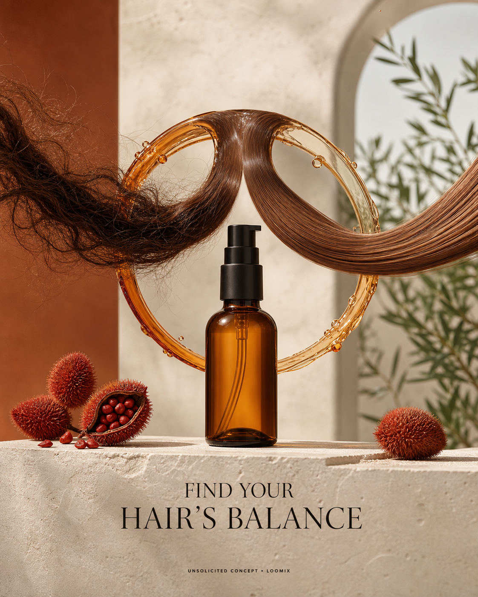

Concept created by LoomixUnsolicited concept
DavinesReels + TikTok9:168 seconds
OI Oil — Find Your Hair’s Balance
Two opposing hair ribbons enter a clear Roucou-oil ring—one frizzy, one rigid—and merge into a single soft, glossy curve in perfect balance.
Create the full adOpen product pageAI-generated visual direction

Concept art for discussion only. Product and brand belong to Davines.
Hooks
Find your hair’s balance.Frizz and dryness, meet harmony.The soft side of Roucou.
Six-shot storyboard
- Open on two opposing hair textures.
- Reveal the OI Oil bottle and clear ring.
- Pull both strands through Roucou oil.
- Soften frizz and release rigidity.
- Merge them into one glossy balanced curve.
- End on bottle, ring, hook, and CTA.
Caption
A visual harmony story that turns multifunctional smoothing, softness, and shine into one elegant motion.
LoomixLoomix turns one product photo into a storyboard, short video direction, captions, and ready-to-post ad copy.